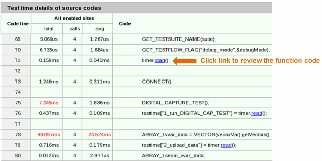
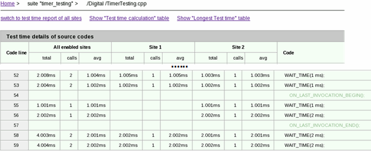
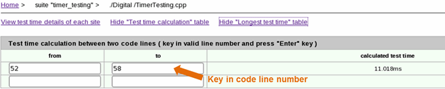
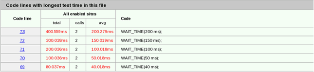

Test time details of code lines
Test Time Breakdown Analyzer can analyze every line of code in the test method. The report shows the test time of each line of code.
To view the test time details of a test method, click a test method in the Test time details in code column of the Test time of test suites table.
Then you can see the test time of each line of code for all sites as shown in the screenshot below:

To see the test time of each line of code for each site as shown in the screenshot below, click View test time details of each site.

To calculate the test time between two lines of code, click Show "Test time calculation" table and enter the line numbers to calculate, as shown in the figure below.

To see the list of code lines consuming the longest test time as shown below, click Show "Longest test time" table.

Functional changes
- Introduced in SmarTest 7.2.2